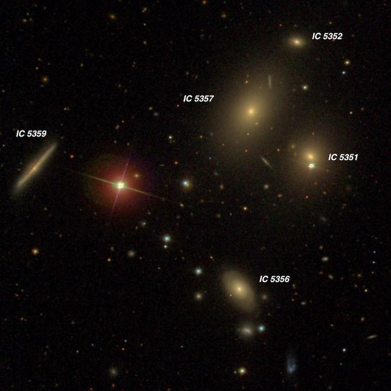
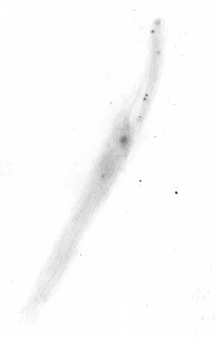
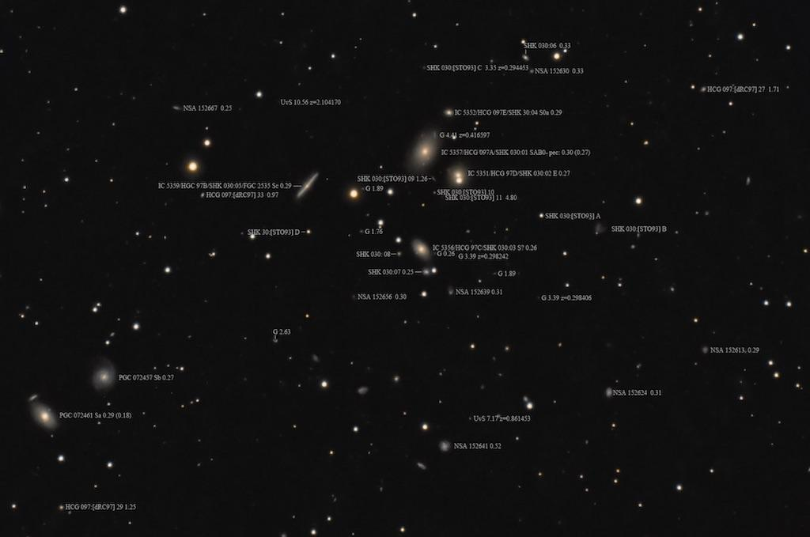
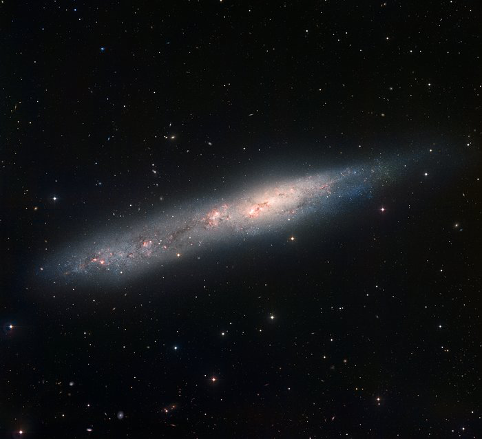

Hickson 97 = Shk 30
- Type: Compact Galaxy Group
- Constellation: Pisces
- Position: 23 47 23 -02 19 34 (2000)
- Members: 5+
- Distance: ~300 million l.y. (z = .022)

If you enjoy observing compact groups, HCG 97 presents 5 galaxies ranging from V = 13.0 to 15.6 and presents a nice challenge for a range of apertures. Furthermore, it's the brightest of the 377 Shakhbazian compact groups of compact galaxies (Shkh 30).
The main quintet was discovered by E.E. Barnard on 28 Oct 1889 at Lick Observatory. At the time, Barnard was observing Brooks Comet (1889V) with the 36-inch Clark refractor. He didn't publish the discovery, though, until 1906 while he was at Yerkes Observatory. His sketch (below) clearly identifies all 5 members of the quintet. Don't try to match up Barnard's letter designations with Paul Hickson's - there's no correlation. Also note his sketch has south up, so you'll need to mentally rotate it 180° to match the SDSS image.
The Shakbazian numbering goes deeper and includes 6 through 11 as well as A through D, (letters added later), for a total of 15 galaxies. One or more of these, though, may be background galaxies.

All 5 members of HCG 97 are visible in an 18" scope in good conditions, though one is tough. The brightest member is 13th magnitude IC 5357 = HCG 97A = Shkh 30-1. I recorded it in my old 18" as "moderately bright, elongated 4:3 NNW-SSE, 0.8'x0.6', broad concentration. Located 3' NW of a mag 10.5 star (with IC 5351 attached)."
IC 5359 = HCG 97B = Shkh 30-5 is a thin edge-on and fainter than you'd expect for the "B" component. It was quite a dim streak in my 18", about 50" in length with a very low, uniform surface brightness. Interestingly, Barnard didn't sketch it as an edge-on in the 36-inch. It's marked with a "K" on his sketch.
IC 5351 = HCG 97D = Shkh 30-2 is interesting because it's attached on the north side of a 12th magnitude star, which partly masks the galaxy! You might also see the nucleus of the galaxy if it's not washed out by the star.
The faintest member (15.6V) of the quintet is IC 5352 = HCG 97E = Shkh 30-4, which was a threshold object in my 18". I took a look at it two weeks through my 24-inch and still there were no details. Just a small, round 12" patch. Hickson failed to identify his HCG 97E as IC 5352, and this omission is continued today by HyperLEDA and SIMBAD.
Besides the quintet, there are a couple of MCGs about 12' SE (MCG -1-60-40 and -41) that you should also check out (-41 is easier). And in excellent conditions - and large enough aperture - it might be possible to glimpse one of the much fainter Shk members. Barnard mentioned "there are probably a number more nebulae here." He was right!
This labeled image is from Rick Johnson, who passed away earlier this year, and often posted his images of obscure galaxies and groups on CloudyNights.

As always,
"Give it a go and let us know!
Good luck and great viewing!"
Steve's follow-up — October 7th, 2019, 04:50 PM
As far as nearby galaxies, MCG -01-60-041 (to the southeast of HCG 97) is easier than the fainter members of the quintet, so check it out if you revisit the group. Looking at the dim galaxies displayed in the SDSS image, the one just south of IC 5356 might be glimpsed in a 20" or larger scope in superb conditions, but I haven't seen it.
Fortunately, Barnard left us with his sketch and positions of the group, so the identifications (specifically IC 5352) are not in doubt. I've rotated his sketch so north is up and can be compared directly with the SDSS image.

Steve's follow-up — October 13th, 2019, 03:15 AM
I believe a good check on the limiting range of the 36-inch are the 17 IC galaxies discovered by Barnard and Burnham in 1890 in Abell 1783 (IC 918, 919, 921-3, 925, 926, 928-32, and 934-38).
Unfortunately, the identifications are somewhat guesswork due to inaccurate positions, but there are certainly some quite faint galaxies in this cluster that were discovered visually.
Steve's follow-up — October 13th, 2019, 11:47 PM
And the fact that he noticed and perhaps sketched these dim galaxies (I haven't seen his logbook) while scanning the field suggests he could have reached at least 0.5 mag fainter if he had prior knowledge.